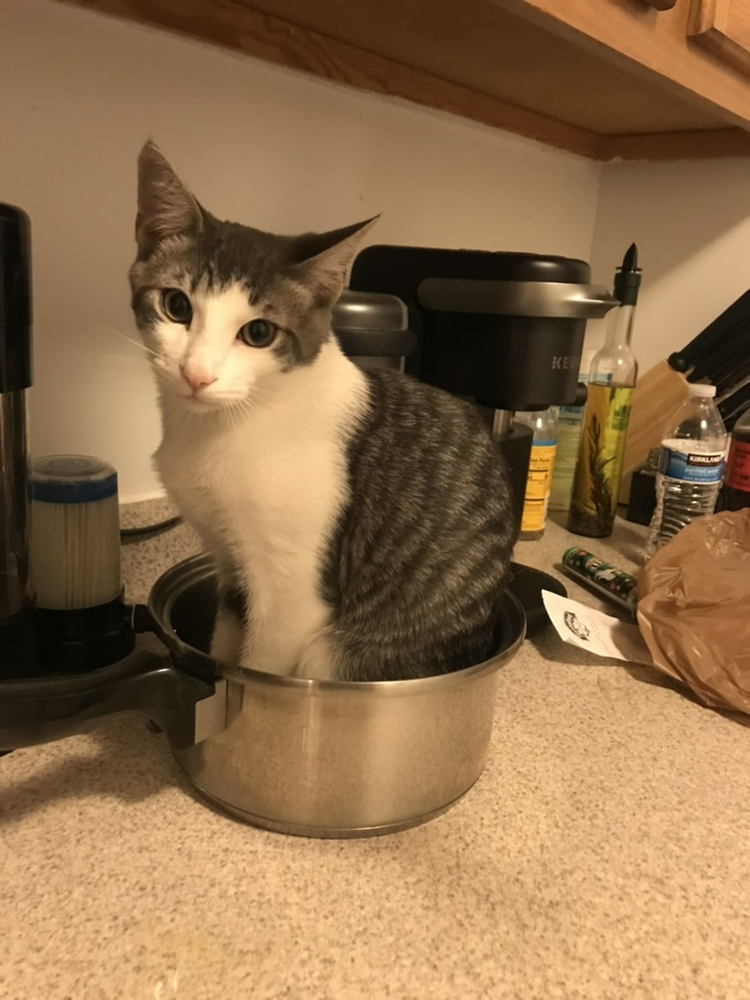
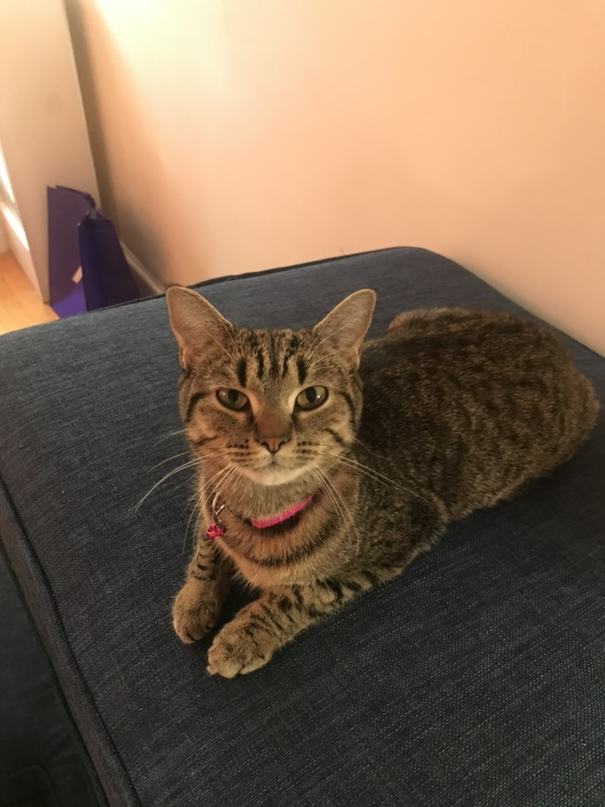
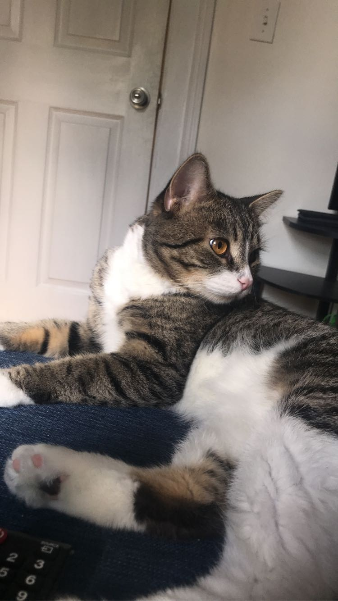
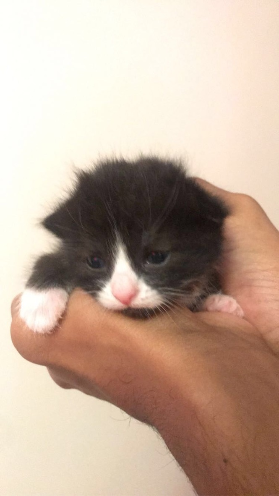
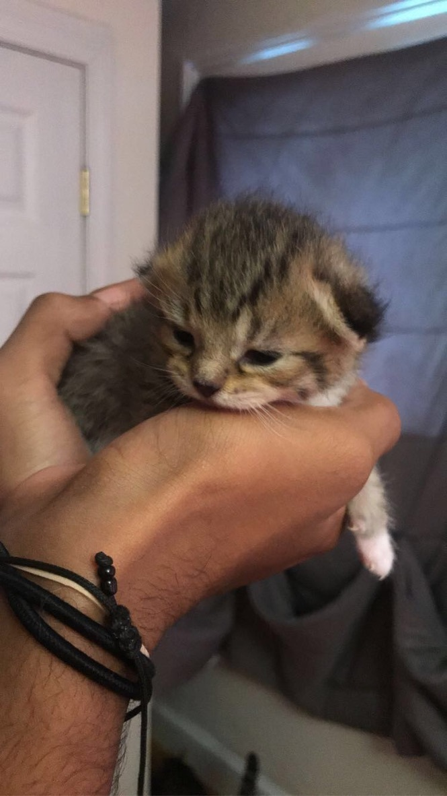

Great having you here. Please allow me to introduce you to my feline family.
|  |  |  |  |  |
| Toby | MJ | Loki | Milo | Lyla |
| Grey/White | Black/Grey | Grey/White/Biege | Black/White | Grey/White/Biege |
| Green Eyes | Green Eyes | Orange Eyes | Green Eyes | Grey Eyes |
| 2 yrs 2 months | Age Unknown | 1 yr 3 months | 6 weeks | 6 weeks |
| Learn More | Learn More | Learn More | Learn More | Learn More |
Toby is the first cat I ever owned. I got him from my mother back in September of 2020. He was just a month old when I got him.
Prior to having Toby, I considered myself more of a dog person. But he quickly changed my mind with his quirky personality. He has
an unusual personality for an animal. He's very skittish, but also very playful and energetic. He's very sweet, but isn't really
one for rubs and petting. He allows you to pet him for a little bit, but then will either gently bite your hand or move away. Toby
is a very comical cat because he's such a weirdo, so you'll often find him doing funny things, like sleeping in pots or in weird
positions. Toby now lives with my sister, but I still consider him part of my cat family for all the memories we shared together.
Literally the sweetest cat that I have ever met. I got MJ in October 2021. My boyfriend found her on a post on Facebook.
She was in a home where she lived with a male cat that did not like her at all, so he was very aggressive and violent towards
her. Her owners were giving her away out of concern for her safety. We got her in a little box, and right from the get go, I saw
that she was a very gentle and sweet cat. She's never been aggressive and absolutely loves to be rubbed and petted. She likes
following me around my apartment and always greets me when I arrive home with a long string of meows. Probably my favorite cat
I've ever owned (don't tell the others). MJ currently lives with me.
Loki is the cat I got most recently, back in May of 2022. My boyfriend got him from a friend of his who had a whole litter of
cats. He is a very sweet and gentle cat, despite his big and strong physique. Loki loves getting rubbed although he's very
shy and skittish sometimes. He's also very playful and energetic, but is never aggressive towards his owners. Loki is the first
cat I've ever met that has orange eyes. His eyes were the first thing that caught my eye when I saw him, they're beautiful. Loki
currently lives with me.
Milo and Lyla are the babies of MJ and Loki. They were born 6 weeks ago, and they're growing so fast! They're already walking
and running by themselves. And they are super playful and energetic. Their latest accomplishment has been learning how to climb
the bed and jump off by themselves. Milo is the more playful and curious out of the two. He loves being close to people so you'll
often find him following you around trying to grab your foot. Lyla is more on the shy side, so she prefers to keep her distance.
They love to play and sleep together. They both currently live with me, and I cannot wait to see them grow together.